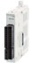
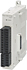
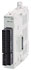
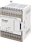
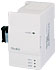
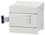

MELSEC-F series Input device for temperature sensor

Temperature control blocks support Thermocouple elements and PT100 elements.
FX2N-2LC and FX3U-4LC temperature control blocks are used when the internal PID functions are not precise or fast enough.
| Model (Number of channels) |
Available sensor | Input specifications | Applicable FX PLC | ||||||||||
|---|---|---|---|---|---|---|---|---|---|---|---|---|---|
| Item | Temperature input | FX 3S |
FX 3G |
FX 3U |
FX 3GC |
FX 3UC |
|||||||
| FX3U-4AD-PT-ADP (Input 4 ch)  |
Platinum resistance thermometer sensor Pt100, 3-wire |
Input range |
-50 to 250°C Digital output (-500 to 2500) |
*8 ○ Max. 1 unit |
*3*4 ○ Max. 2 units |
*5 ○ Max. 4 units |
○ Max. 2 units |
*5*6 ○ Max. 4 units |
|||||
| Resolution | 0.1°C | ||||||||||||
| FX3U-4AD-PTW-ADP (Input 4 ch）  |
Platinum resistance thermometer sensor Pt100, 3-wire |
Input range |
-100 to 600°C Digital output (-1000 to 6000) |
*8 ○ Max. 1 unit |
*3*4 ○ Max. 2 units |
*5 ○ Max. 4 units |
○ Max. 2 units |
*5*6 ○ Max. 4 units |
|||||
| Resolution | 0.2 to 0.3°C | ||||||||||||
| FX3U-4AD-TC-ADP (Input 4 ch)  |
Thermocouple K/J type |
Input range |
K type: -100 to 1000°C Digital output (-1000 to 10000) J type: -100 to 600°C Digital output (-1000 to 6000) |
*8 ○ Max. 1 unit |
*3*4 ○ Max. 2 units |
*5 ○ Max. 4 units |
○ Max. 2 units |
*5*6 ○ Max. 4 units |
|||||
| Resolution | K type: 0.4°C J type: 0.3°C |
||||||||||||
| FX2N-8AD (Input 8 ch)  Discontinued |
Thermocouple K/J/T type |
Input range |
K type: -100 to 1200°C Digital output (-1000 to 12000) J type: -100.0 to 600°C Digital output (-1000 to 6000) T type: -100.0 to 350°C Digital output (-1000 to 3500) |
× | ○ Max. 8 units |
○ Max. 8 units |
*9 ○ Max. 8 units |
*1*2 ○ Max. 8 units |
|||||
| Resolution | [Typical example] K type: 0.1°C J type: 0.1°C T type: 0.1°C |
||||||||||||
| FX2N-2LC (Input 2 ch)  |
Platinum resistance thermometer sensor Pt100, JPt100 |
Input range |
[Typical example] Pt100: -200 to 600°C JPt100: -200 to 500°C |
× | ○ Max. 8 units |
○ Max. 8 units |
*9 ○ Max. 8 units |
*1*2 ○ Max. 8 units |
|||||
| Resolution | 0.1°C or 1°C (differs depending on the sensor used) |
||||||||||||
| Thermocouple K/J/R/S/E/T/B/N/ JIS C 1602-1995/ PLII/W5Re/W26Re/ U/L type |
Input range |
[Typical example] K type: -100.0 to 1300°C J type: -100.0 to 800°C |
|||||||||||
| Resolution | 0.1°C or 1°C (differs depending on the sensor used) |
||||||||||||
| FX3U-4LC (Input 4 ch)  |
Platinum resistance thermometer sensor Pt100, JPt100, Pt1000 |
Input range |
[Typical example] Pt100: -200 to 600°C Pt1000: -200.0 to 650.0°C |
× | ○ Max. 8 units |
*7 ○ Max. 8 units |
*9 ○ Max. 8 units |
*1*7 ○ Max. 6 units |
|||||
| Resolution | 0.1°C or 1°C (differs depending on the sensor used) |
||||||||||||
| Thermocouple K/J/R/S/E/T/B/ N/PLII/W5Re/ W26Re/U/L type |
Input range |
[Typical example] K type: -200.0 to 1300°C J type: -200.0 to 1200°C |
|||||||||||
| Resolution | 0.1°C or 1°C (differs depending on the sensor used) |
||||||||||||
| Low voltage input | Input range |
0 to 10 mV DC 0 to 100 mV DC |
|||||||||||
| Resolution | 0.5 μV or 5.0 μV (differs depending on the sensor used) |
||||||||||||
- *1When connecting to FX3UC, FX2NC-CNV-IF or FX3UC-1PS-5V is required.
- *2FX3UC-32MT-LT(-2): 7 units. FX3UC-**MT/D, FX3UC-**MT/DSS, FX3UC-16MR/D(S)-T: 8 units.
- *3When connecting to FX3G, FX3G-CNV-ADP is required.
- *4FX3G 14 pt, 24 pt models: 1 board. 40 pt, 60 pt models: 2 boards.
- *5For connection to FX3U and FX3UC-32MT-LT(-2), function expansion board is required.
- *6Supported by FX3UC-32MT-LT ver. 1.30 and later.
- *7Supported by FX3U and FX3UC ver. 2.20 and later.
- *8When connecting to FX3S, FX3S-CNV-ADP is required.
- *9When connecting to FX3GC, FX2NC-CNV-IF or FX3UC-1PS-5V is required.